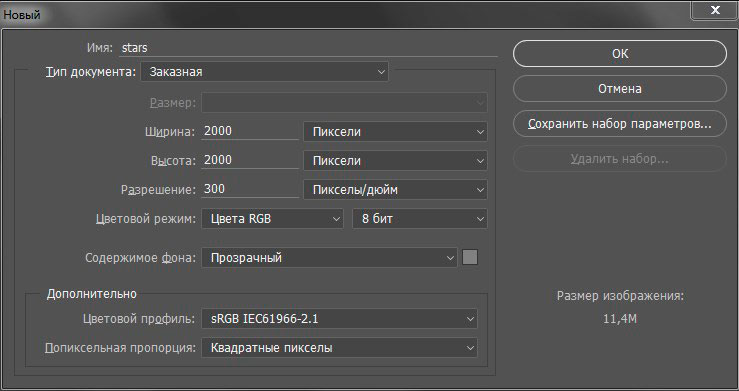
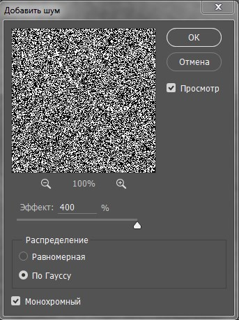
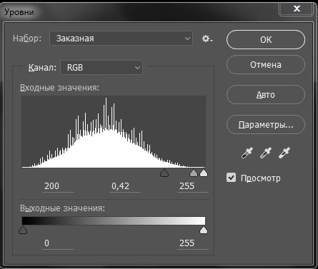
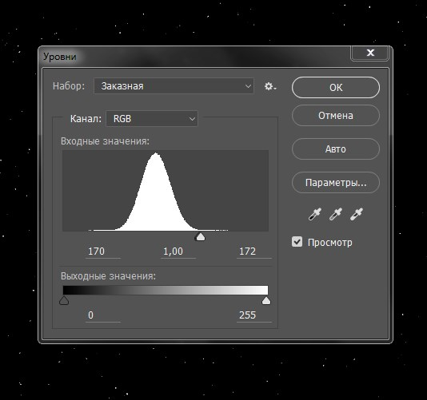
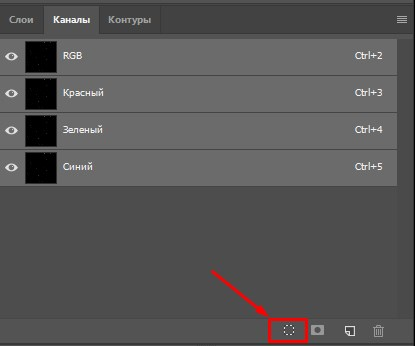
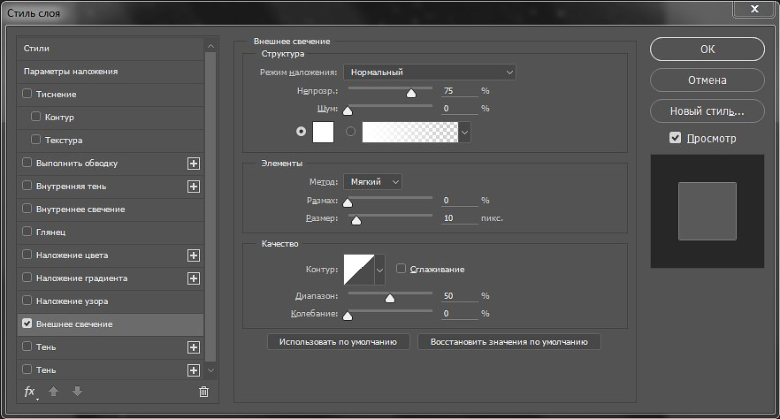
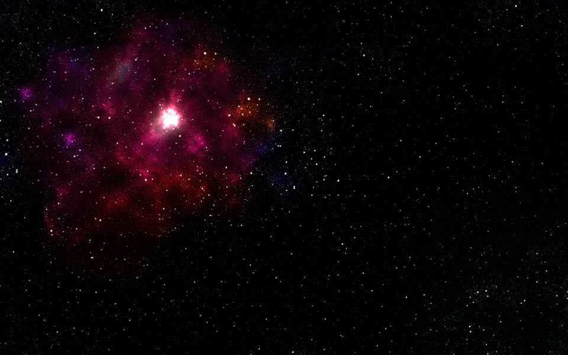
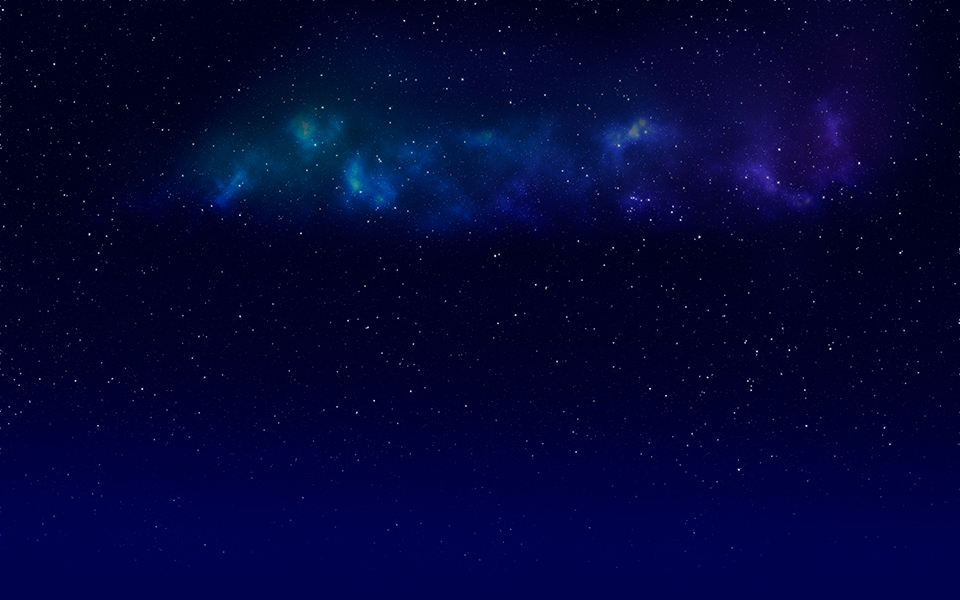
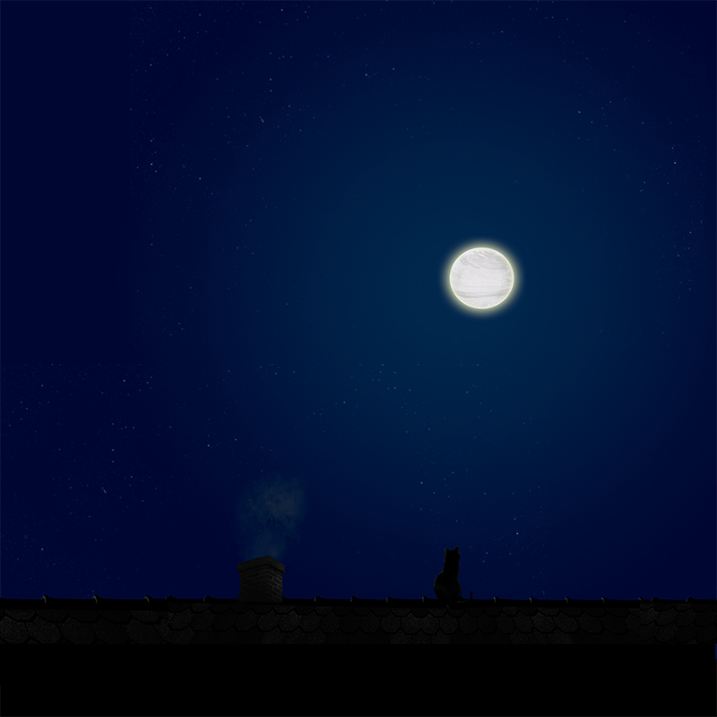

Звездное небо в Photoshop
Я не увлекаюсь созданием "фоновых" изображений в фотошопе. Но для сайта мне понадобился backround-image. Выбор остановила на звездном небе в разных локациях. И "гугл мне в помощь", пересмотрела множество обучалок по созданию звезд. Из них нашла подходящий вариант. Он простой, не занимает много времени, финальное изображение выглядит реалистичным, можно использовать как шаблон для других картинок (слой со звездами на прозрачном фоне). Сразу оговорюсь, фотошоп у меня был русифицированный (настройки в английской версии можно посмотреть в оригинале, ссылка в конце статьи).
Моя интерпретация:
1. Создаем новый документ
(я взяла другие параметры холста, чем в оригинальной статье)

Заливаем фон черным цветом (на клавиатуре нажимаем D - цвет палитры по умолчанию, затем G (или shift + G) - инструмент заливка).
2. Добавляем немного шума. Впоследствии этот шум станет звездами. В меню "Фильтр" выбираем "Шум" -> "Добавить шум...". Эффект выставляем 400%, распределение по Гауссу, и не забудем поставить галочку "Монохромный".
3. Дублируем слой (ctrl + J). Нижний слой будет маленькими звездами, а верхний - большими. Слой с большими звездами временно отключаем.
4. Размытие нижнего слоя. К слою с маленькими звездами прменяем размытие по Гауссу (в меню "Фильтр" выбрираем "Размытие" -> "Размытие по Гауссу") радиусом в 0,5px.
5. Магия создания звезд. Открываем "уровни" (ctrl + L) или в меню "Изображение" ("Коррекция" -> "Уровни"). И устанавливаем слудующие настройки:  То есть, меняем входные значения (200 - .42 - 255). Маленькие звезды готовы. Делаем активным верхний слой.
6. Размытие верхнего слоя. Применяем размытие по Гауссу с радиусом размытия в 2px.
7. Магия создания больших звезд. Вызываем "Уровни" (ctrl + L) и устанавливаем входные значения (170 - 1 - 172). 
8. Добавим еще размытия по Гауссу в 1px верхнему фону.
В принципе, звезды уже готовы. Теперь необходимо отделить большие звезды от черного фона и объеденить с маленькими. Для этого выбираем верхний слой.
9. Загруза выделенной области. Заходим в "каналы" на панели слоев и нажимаем на кнопку "загрузить содержимое канала как выделенную область".
После чего, возвращаемся на вкладку со слоями. Создаем новый (прозрачный) слой. В палитре цветов меняем основной цвет на белый. Берем инструмент заливка (shift + G). И заливаем слой с прозрачным фоном. Так как предварительно у нас была выделена область со звездами, именно она будет залита цветом. Фон останется прозрачным. Мы покрасили наши звезды в белый цвет. После этого снимаем выдереление (ctrl + D). Удаляем слой с большими звездами. У нас остались большие звезды на прозрачном фоне и слой с маленькими звездами на черном фоне.
10. Добавляем свечения большим звездам. Два раза нажимаем на прозрачный слой для вызова окна со стилями слоя. Выбираем "внешнее свечение" и выставляем следующие настройки 
На этом можно остановиться. Если звезды необходимо перемещать на различные фоновые изображения, либо менять цвет фона (например, звезды на синем небе), я бы предложила повторить пункт №9 для отделения маленьких звезд от фона. После этого оба слоя можно объеденить в один (ctrl + E). И уже в таком виде на прозрачном фоне удобно манипулировать и совмещать с другими изображениями. Что я и сделала. Примеры работ со звездами:    Экспериментировать можно до бесконечности. И с цветом, размером звезд. Основу техники создания звезд позаимствовала на портале: designstacks.net
Опубликовано: